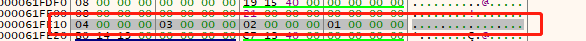
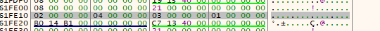
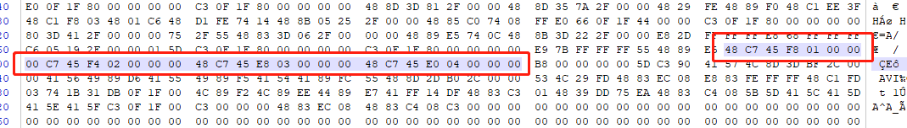
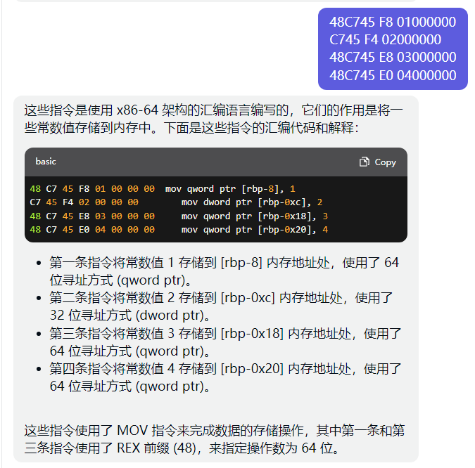

C语言中不同数据类型，定义变量的顺序对栈内存分配的影响
前几天看了下C的数据结构，想在Compiler Explorer里看下，变量和值在内存里是怎么关联的。结果有意外发现
编译器版本：x86-64 gcc 8.1
源码：
1 | |
编译后：
1 | |
可以看到，
第一个long类型的值1分配了8个内存单元，
第二个long类型的值3却分配了12个内存单元，
第三个long类型的值4又正常分配了8个内存单元
如果把int num2 = 2;语句放到最后定义，前三个long类型的都正常分配了内存大小
1 | |
换一个编译器，还是本篇开头的源码
armv8-a clang 16.0.0，反而又变成了第一个long型数据占12个内存单元
1 | |
自己电脑上的编译器，gcc version 8.1.0 (x86_64-win32-seh-rev0, Built by MinGW-W64 project)，
exe文件用x64 dbg打开
1 | |
内存数据：

这里long和int又都分配了4字节，调整int变量赋值语句的顺序也不再影响long型变量的栈分配空间，

看到这里严重怀疑是Compiler Explorer的坑，只是做了语句转换，后台并没有实际的编译器去执行。
想到这里又开了台linux虚拟机，再次验证一下
gcc version 10.2.1 20210110 (Debian 10.2.1-6)
同样开头的源码,编译出来的可执行文件直接拖进winhex（给自己留个坑，linux下gcc的调试及工具、内核调试、ebpf等等还没怎么了解过；ida之前看到挺多人发gpt插件，回头体验下）

1 | |
偷个懒：

结果光速打脸，编译之后依次分配了8、4、12、8个内存单元，linux下的gcc编译确实有这种情况
再试一次把int赋值语句放到最后
1 | |
编译之后依次分配了8、8、8、4个内存单元，和Compiler Explorer编译结果一样….
ChatGPT对此的回答是
总结：
不同平台编译器，编译之后结果确实不一样
linux下gcc,不同类型的变量初始化赋值时，最好分类一起赋值，节省内存空间(虽然意义不大-_-)